Наука · журнал «ДентАрт» 2013 №3 (72)
Особливості стоматологічного лікування дітей з розладами аутистичного спектру
SPECIFICITIES OF DENTAL TREATMENT IN CHILDREN WITH AUTISM SPECTRUM DISORDERS
Ситуативний аналіз
Стоматологія є однією з головних галузей у лікуванні людей з розладами аутистичного спектру (autism spectrum disorders — ASD, далі РАС). Проте у всьому світі ці пацієнти мають обмежений доступ до стоматологічної допомоги.7, 9, 15, 16, 20 Проведене в 2005 році у США дослідження виявило, що 67% стоматологів загальної практики відмовляються лікувати дорослих з розладами аутистичного спектру і 60% стоматологів відмовляються надати стоматологічну допомогу дітям з РАС.7 Причина — специфічність симптомів.15 Така ж сама ситуація і в Об'єднаних Арабських Еміратах. Дослідження засвідчило, що стоматологи у цій країні не мають інформації про психічні розлади і дають помилкові приписи під час консультації.16
Науково-дослідний центр «RADIX» у 2011 році провів дослідження в Грузії, згідно з яким 11% грузинських стоматологів мали як мінімум одне звернення від пацієнта з розладом аутистичного спектру з проханням забезпечити стоматологічну допомогу. Але 21% таких пацієнтів отримали відмову. Проблема також криється у ставленні до людей з РАС. 32,4% респондентів вважають дружбу або сусідство з індивідами, що мають РАС, неприйнятними. Відповідно, тільки 59% стоматологів готові надати стоматологічну допомогу таким пацієнтам.1, 2
Мала доступність у стоматологічне поле обумовлена також відсутністю інформації про цих пацієнтів. У травні-червні 2011 року в двох центрах аутизму в ОАЕ (у містах Дубай і Шарджа) було досліджено стан здоров'я порожнини рота у дітей. Результати свідчать про велику кількість випадків карієсу і гінгівіту у дітей з РАС, що пов'язано з їх аддикцією до солодощів, поганими навичками гігієни порожнини рота (нерегулярні чищення зубів щіткою і флосинг) і низьким рівнем обізнаності у батьків (вони не мають у розпорядженні інформації про те, як допомогти своїм дітям сформувати гарні навички гігієни порожнини рота). Таким чином, ми можемо зробити висновок про те, що у всьому світі доступ до стоматологічного лікування пацієнтів з РАС обмежений, головною причиною чого є низький рівень обізнаності стоматологів і пацієнтів у цьому полі. Деякі вчені вважають причиною цього недостатній час для вивчення психічних розладів в освітньому процесі. 50% американських студентів-стоматологів на останньому році навчання не мають клінічного досвіду лікування пацієнтів з психічними розладами, 68% отримали 5 і менше годин навчання тому, як лікувати цих пацієнтів, 22% — менше 1 години,20 1/4 стоматологів загальної практики ніколи не одержували якої-небудь освіти в цій галузі.5 Після двогодинної лекції їхнє негативне ставлення до людей з РАС змінилося у позитивний бік.8 Тому останніми роками було засновано центри підготовки, створено стратегії і інструкції зі стоматологічної допомоги таким людям.3 У Грузії не існує жодних офіційних даних про стоматологічне обслуговування людей з РАС. Але якщо ми проаналізуємо наявну тут університетську і аспірантську стоматологічну освітню систему, то можемо припустити, що ситуація в Грузії набагато гірша.
Класифікація і клінічні симптоми розладів аутистичного спектру
Згідно з Довідником діагностики і статистики психічних розладів (DSM-IV)18 і Міжнародною класифікацією хвороб (ICD-10),12 аутизм разом із синдромом Аспергера і неспецифікованими первазивними розладами розвитку формують групу розладів аутистичного спектру, які зумовлені порушенням нейророзвитку. До первазивних розладів розвитку також належать синдром Ретта і дезінтегративний розлад дитячого віку, що мають типові для аутизму симптоми.
Професіоналам медичної допомоги необхідно знати симптоми РАС:
- Проблема з розвитком навичок мовлення: дитина може взагалі не розмовляти19 або може почати розмовляти пізно. Затримка — або відсутність — навчання спілкуванню. Стереотипне і повторюване вживання мови: люди з аутизмом часто знову і знову повторюють фразу, яку вони перед цим почули (ехолалія).14 Вони можуть говорити дуже добре, але ніколи не використовують вербальні навички для комунікації, тому люди з аутизмом можуть вдаватися до допомоги візуального матеріалу (зображень) для комунікації.17 Це полегшує їм взаємодію зі світом. Ось чому була створена PECS (комунікативна система обміну зображеннями), що є ключовою для спілкування з аутистами. «Зображення — це друга мова для мене. Коли хто-небудь розмовляє зі мною, то його слова негайно трансформуються в зображення», — пише у своєму бестселері «Мислення зображеннями» знаменита жінка-учений Темпл Грандін, котра має аутизм.
- Атипові соціальні стосунки, які зумовлені якісною девіацією соціальних стосунків і комунікації, а також відбивають особливості дитячого емоційного розвитку. Таким людям складно розуміти і оцінювати міміку, жестикуляцію, свої і чужі людські емоції, а також адекватно реагувати на них.4
- Порушення поведінки і специфічність мислення, пов'язані зі згаданими вище пунктами.10
Прикметно, що кожен випадок РАС має свої власні клінічні характеристики і є абсолютно індивідуальним. Не існує двох людей з РАС, які мали б ідентичні характеристики. Симптоми і когнітивний дефіцит мають варіації залежно від віку пацієнта, серйозності хвороби і її процесу. Причина РАС невідома, хоча часто її зв'язують з порушеннями обміну речовин, стресом у період вагітності і т. д. РАС можна виявити в усіх расах і культурах, і в 4 рази частіше у хлопчиків, ніж у дівчаток.11 У 2008-2009 роках Асоціація неврологів і нейрохірургів Грузії за фінансової підтримки Грузинського національного наукового фонду провела дослідження «Розлади аутистичного спектру в Грузії: діагностика і епідеміологія». Попереднє дослідження засвідчило, що грузинські епідеміологічні дані не відрізняються від даних з решти світу:6 поширеність хвороби вища лише на 0,89%.
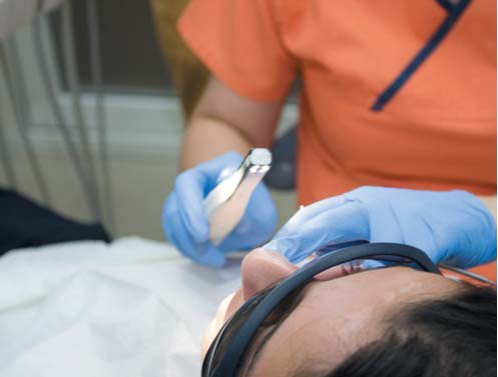
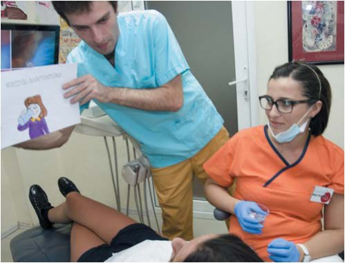
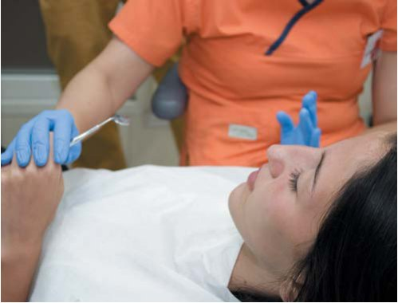
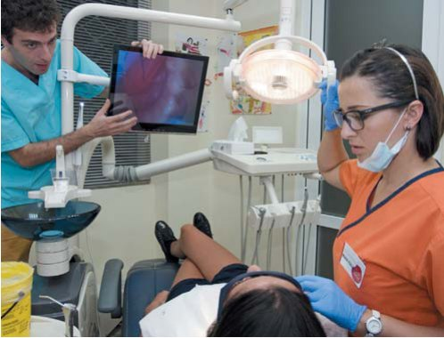
Залучення батьків у процес навчання дитини навичкам гігієни порожнини рота
Батьки несуть відповідальність за гігієну порожнини рота дітей до 5-6 років. Гарна гігієна порожнини рота дуже важлива для всього здоров'я дитини. Навички чищення зубів щіткою повинні формуватися, починаючи з віку 2-х років. Процес навчання вимагає великих зусиль. Але діти з РАС і їхні батьки стикаються і з іншими випробуваннями.
По-перше, ми повинні вибрати зубну щітку, яка б сподобалася дитині. Чищення зубів виконується зазвичай у ванній кімнаті, але спочатку наша мета полягає в тому, щоб сформувати навичку, тому цю процедуру можна проводити у вітальні, на дивані або в будь-якому іншому місці, де дитина почувала б себе комфортно.
Ми лише торкаємося зубною щіткою губ дитини — таким чином даємо їй можливість звикнути до щітки. Імовірно, нам також доведеться вчити дитину відкривати рот. Нам слід підібрати зубну пасту, яка б відповідала дитячому смаку. Пасти для дітей часто мають смак полуниці, малини або жувальної гумки, що сподобається дитині.
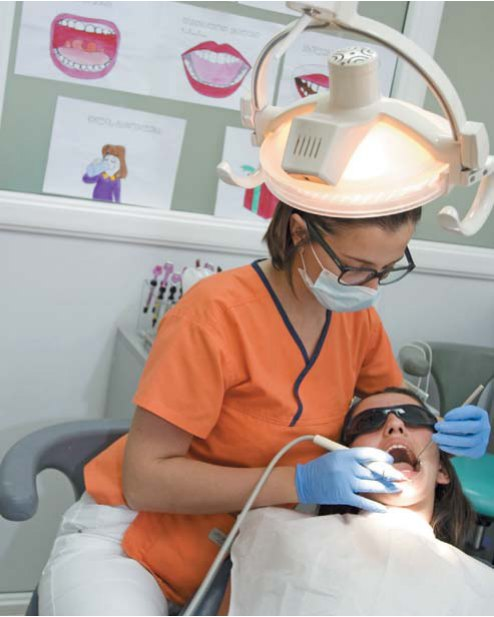
Нам треба продемонструвати, як дитина повинна чистити зуби. Такі візуальні демонстрації допоможуть побудувати позитивні стосунки. Біхевіористи вважають це найефективнішим методом навчання. Ми також можемо дозволити дитині почистити нам зуби.
Спочатку ми самі повинні чистити дитині зуби. Станьте перед дитиною так, щоб її голова була на ваших грудях, видавіть на центр щітки зубну пасту величиною з горошину і робіть такі ж самі рухи щіткою, якими ви чистите свої власні зуби.
Такі ж самі стратегії слід використати для того, щоб навчити флосингу. Спочатку треба розпочати з одного зуба, і лише коли дитячий протест ущухне, можна переходити до інших зубів. Слід звернути увагу на те, що коли дитині ця процедура здасться рутинною і нудною, то наші зусилля виявляться марними. Із самого початку ми повинні створити радісний настрій і намагатися сформувати у дитини позитивне ставлення. Наша головна мета — формування у дитини навичок самостійної гігієни порожнини рота.
Також можна використати годинник, щоб дитина мала можливість зрозуміти, коли треба зупинити процедуру.
Рекомендується створити візуальний план процесу: можна намалювати картинки або зробити фотографії важливих етапів чищення і повісити їх на стіну. Цей метод полегшить дітям навчання. Зображення можна ламінувати, а кожну проведену процедуру — оцінювати. Існують і інші варіанти: зображення можна розташувати в хронологічному порядку і пройти їх крок за кроком вперед або назад.
Згідно з дослідженням, проведеним у секції педіатричної стоматології відділення одонтології Університету Умеа (Швеція), після 12 місяців використання зображень в процесі навчання навичкам гігієни порожнини рота у дітей-аутистів інтенсивність карієсу значно зменшилася. Після 18 місяців батьки могли без зусиль зберегти отримані результати.17
На кожній стадії дитину важливо підтримувати — це може бути вербальне заохочення: похвала, згадка і висока оцінка зробленої роботи.
Рекомендується розпочати процес навчання з ручною зубною щіткою, а потім поміняти її на електричну. У деяких випадках електрична щітка може бути комфортнішою і ефективнішою, ніж ручна, оскільки електрична вимагає менше зусиль у порівнянні з ручною.
Візит до стоматолога
Важливим кроком у розвитку дитини є перший візит до стоматолога. Наприклад, ми можемо взяти процедуру професійного чищення і розділити її на стадії.
1. Похід до стоматолога
Особливу увагу треба звернути на підготовку візиту до стоматолога. Передусім батьки повинні знайти стоматолога і пояснити йому особливості поведінки дитини. Маючи діагноз РАС, дитина може бути гіперчутливою до певних видів стимулів — дотиків, голосу або візуальних подразників. Ці стимули можуть стати істотною причиною тривоги у дитини. Візит до стоматолога слід спланувати разом з батьками так, щоб врахувати фізичний і емоційний стан дитини впродовж дня.
Стоматолог повинен послати фотографії клініки батькам, внаслідок чого дитина буде знайома з клінічною обстановкою. Також можна спланувати попередні візити — дитина спершу може побачити клініку, поторкати і потримати в руках стоматологічні інструменти, адаптуватися до обстановки в стоматологічній клініці. Стоматолог повинен сформувати дружні стосунки з пацієнтом і спробувати побудувати ефективну комунікацію — йому слід говорити спокійно.
Батькам треба завчасно симулювати процедуру: удома з відповідним оснащенням відтворити модель процесу. Потім у календарі дитини треба позначити день першого візиту. Бажано, щоб члени сім'ї супроводжували дитину під час першого візиту і були присутніми при процедурі. Дитина може узяти з собою улюблену іграшку.
Важливо використати візуальний план, де фото або малюнки показують усе, що відбуватиметься під час візиту до стоматолога. Перше зображення демонструватиме приймальню — «чекаємо лікаря». Слід пам'ятати про те, що у дитини з РАС очікування в черзі здатне викликати дискомфорт через страх, що людина, котра стоїть поряд, може доторкатися до неї. Відчуття дотику може змінюватися від гіпер- до гіпочутливості дуже швидко. При гіперчутливості навіть легкий дотик може відчуватися як сильний удар, що асоціюється з болем, особливо коли це відбувається несподівано. При гіпочутливості ми відчуваємо сенсорний «голод». У такому разі дитина може ховатися під килим або залазити на меблі і таким чином посилювати відчуття дотику. За таких обставин найліпше рішення — міцні і сильні обійми.
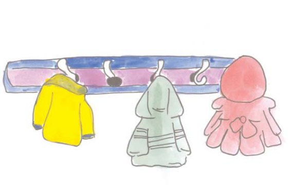
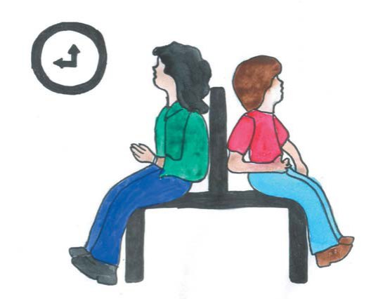
2. Друга стадія — сидіння у стоматологічному кріслі
Багато дітей з РАС можуть сидіти спокійно тривалий час, але це залежить від того, наскільки така навичка сформована. Ось чому ми повинні проконсультуватися з батьками, нянею або учителем і з'ясувати, як довго дитина здатна слухатися. Тому дитині слід точно знати, що ми вимагаємо від неї і як довго цей процес триватиме. Можна використати пісочний годинник або голосовий сигнал, але запланований захід має бути виконаний. Для людей-аутистів рутина має величезне значення.12 Їхній світ дуже структурований, і вони не люблять раптових змін, які є причиною тривоги і негативних емоцій. «Затяжні паузи» між стадіями їх дуже дратують. Краще, коли перерви між процедурами мінімальні. У такій ситуації візуальний план дня також може допомогти. Щоб уникнути неправильного розуміння, досить інформувати про зміни, проте сама лише вербальна інструкція може бути незрозумілою.
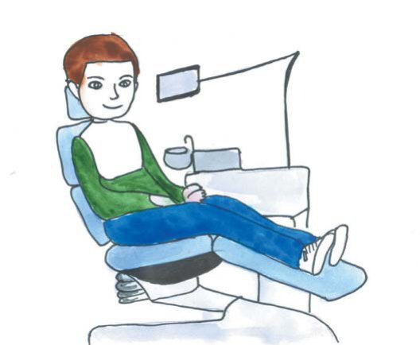
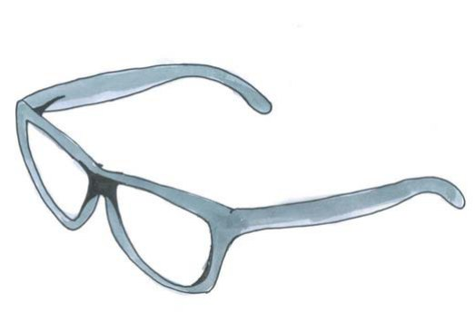
3. Використання світлозахисних окулярів
Одна важлива деталь полягає в тому, що для дитини треба підібрати світлозахисні окуляри і скоригувати світло. Зір дітей з РАС інший, він зорієнтований на деталі. Наприклад, розглядаючи ліс, така дитина бачить дерева, але сприйняти ліс як ціле їй складно. Зоровий контакт також становить труднощі для цих дітей, і багато з них ніколи не дивляться іншим в очі. Їхній зір може бути настільки гіперчутливим, що яскраве світло викличе у них відчуття болю. Це не пов'язано з проблемами зору, і тому так важливо розуміти статус дитини і спланувати адекватну стратегію.
4. Відкривання рота
Дитину слід навчити відкривати рот і тримати його відкритим деякий час. Такі діти не розуміють абстрактного сенсу, і їм важко уявити що-небудь. Так що коли ми вирішимо поставити пломбу, то нам слід показати дитині муляж зуба, що допоможе їй зрозуміти анатомію зуба, бо вербальні пояснення будуть даремними.
Можна пояснити, на якому зубі ми плануємо робити маніпуляції, і дати дитині можливість взяти участь у цьому процесі. Наприклад, вона може порахувати зуби: перший, другий, третій… Це допоможе розвитку дитячої уяви. Діти з РАС мають добре розвинуті інтелектуальні навички, особливо в математиці. Серед них багато людей з величезним талантом. Це породжує надмірні позитивні очікування і посилює стигму аутизму. У реальності більшість з них не відрізняється від своїх однолітків у плані інтелектуального розвитку. Рекомендується мати в розпорядженні інформацію про інтелектуальний розвиток дитини і на підставі цієї інформації побудувати план її залучення у процес лікування.
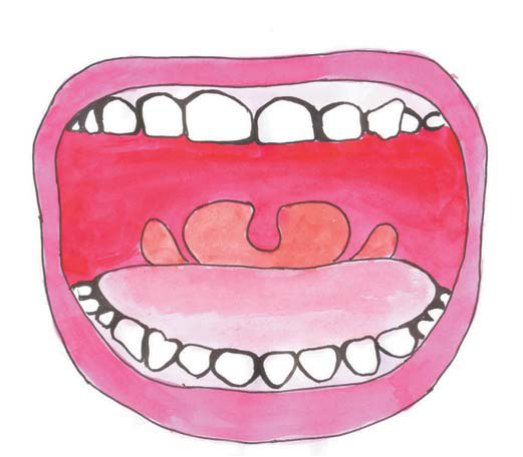
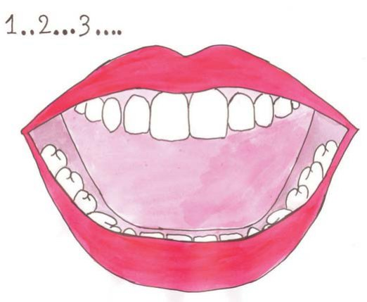
5. Чищення зубів
До початку маніпуляції доцільно дати дитині можливість поторкати і вивчити стоматологічний інструмент. Зменшення шуму стоматологічного наконечника і будь-якого іншого шуму має величезне значення, оскільки пацієнт з РАС може мати труднощі з диференціацією звуків поблизу нього і вдалині і чути всі як один тон. Деякі звуки можуть викликати біль, а раптовий звук — також переляк. Для дитини це може бути достатньою підставою для проблемної поведінки і зупинки процесу лікування.
На останній стадії зображення в плані повинні демонструвати процедури полоскання порожнини рота. Вибираючи підкріплення, нам слід використати стратегії поведінкового менеджменту, що має на увазі зміну поведінки з використанням детального опису, функціонального аналізу, модифікацією стимулів і очікуваних результатів.
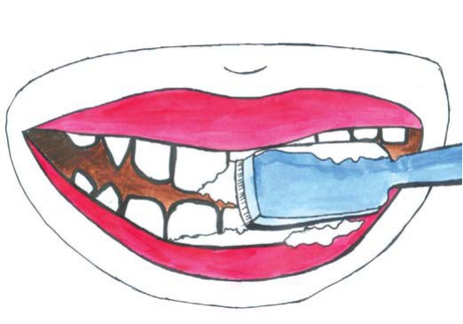
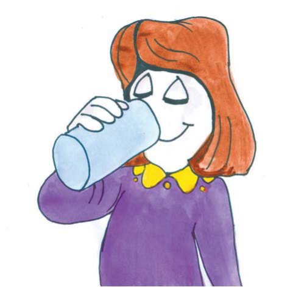
Підкріплення — це процес, коли поведінка посилюється результатом. Є два види підкріплення: позитивне (коли бажана поведінка дитини згадується разом з приємним заохоченням) і негативне (коли небажана поведінка ігнорується і це веде до послаблення і зникнення такої поведінки). Існують 5 традиційних підкріплень у поведінковій (біхевіоральній) терапії:
- Їжа, бо вона універсальна. Але у випадку дітей з РАС слід звернути увагу на деякі чинники: в їхньому щоденному раціоні наявні лише кілька страв, тому гаряча або холодна їжа, її консистенція і смак можуть дратувати дитину і викликати у неї біль.
- Річ (подарунок, щось таке, чому надається перевага).
- Дія (гра, прогулянка і т. д.).
- Обмін (коли дитина зібрала зірочки за усмішки, тоді батьки обмінюють їх на бажане підкріплення).
- Соціальне підкріплення (усмішка, похвала, нагорода).
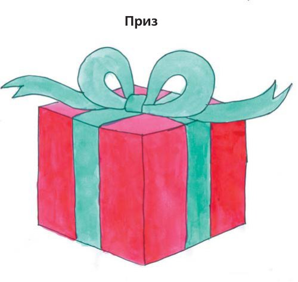
Слід звернути увагу на те, що не існує універсального підкріплення. Його ефективність залежить від віку, культури, минулого досвіду, інтересу та інших чинників, тому підкріплення має бути доречним і обмеженим.
Згідно з дослідженням, проведеним у США, результат лікування і процесу поведінкового навчання, досягнутий без використання підкріплення, є неефективним.13 95% американських стоматологів, котрі працюють з дітьми-аутистами, використовують стратегії управління поведінкою за допомогою підкріплення.9
Висновки
Стоматологи загальної практики можуть обслуговувати дітей з розладами аутистичного спектру. Для таких дітей візит до стоматолога є особливим процесом, який слід пристосовувати до їхніх індивідуальних характеристик. Професіонал у сфері охорони здоров'я повинен знати симптоми цього стану і провадити лікування згідно з належними рекомендаціями:
- Візит до стоматолога дитини з РАС слід планувати разом з батьками. Передусім дитина повинна адаптуватися до клінічної обстановки і процедур лікування.
- Лікареві належить звернути увагу на гіперчутливість дитини до деяких стимулів і на час, упродовж якого вона може сидіти спокійно в стоматологічному кріслі.
- У процесі лікування нам слід використовувати візуальний план усіх дій, а також здійснювати підкріплення, вдаючись до допомоги стратегій поведінкового менеджменту.
Переклад Петра Дениска.
Література
- Alkhanishvili Z. Osipova-Schöneich M. (2012) Dental diseases and treatment features in children with autism spectrum disorder. GSAnews. 14. 34-40
- Alkhanishvili Z. Osipova-Schöneich M. Barkaia Ts. Japaridze N. Zarnadze I. Research on level of dental care for people with disabilities in Georgia" (2013) Tbilisi State Medical University.
- Autism Speaks™. Dental Guide. 2010. (Colgate, PHILIPS Sonicare Toothbrush)/ www.autismspeaks.org
- Baron-Cohen S. The cognitive neuroscience of autism. J Neurol Neurosurg Psychiatry 2004; 75(7):945-8.
- Casamassimo PS, Seale NS. Access to dental care for children in the United States: a survey of general practitioners. J Am Dent Assoc 2003; 134:1630-40
- Centers for Disease Control and Prevention. Prevalence of autism spectrum disorders: autism and developmental disabilities monitoring network, six sites, United States, 2000. MMWR Surveill Summ 2007; 56(1):1-11
- Dao L. P., Zwetchkenbaum S., Inglehart M. R. General dentists and special needs patients: does dental education matter? J Dent Educ 2005; 69(10):1107-15.
- DeLucia L. M., Davis E. L. Dental students' attitudes toward the care of individuals with intellectual disabilities: relationship between instruction and experience. J Dent Educ2009; 73(4):445-53.
- Dental Education and Dentists' Attitudes and Behavior Concerning Patients with Autism. Taryn N. Weil and Marita R. Inglehart, Dr.phil.habil. Journal of Dental Education. December 1, 2010 vol. 74 no. 12 1294-1307
- Early Intervention for Autism Spectrum Disorders: A Critical Analysis By Johnny L. Matson, Noha F. Minshawi. 2006.
- Green D., Flanagan D. Understanding the autistic dental patient. Gen Dent 2008; 56(2):167-71. Medline
- International Statistical Classification of Diseases and Related Health Problems 10th Revision. World Health Organization. http://www.who.int/classifications
- Johnson C. D, Matt M. K, Dennison D., Brown R. S., Koh S. Preventing factitious gingival injury in an autistic patient. The journal of the American Dental Association. 1996;127:244-7.
- Johnson C. P., Myers S. M., Council on Children with Disabilities. Identification and evaluation of children with autism spectrum disorders. Pediatrics 2007; 120(5):1183-215
- Marshall J., Sheller B., Williams B. J., Mancl L., Cowan C. Cooperation predictors for dental patients with autism. Pediatr Dent 2007; 29(5):369-76.
- Mohamed Abdullah Jaber, Dental caries experience, oral health status and treatment needs of dental patients with autism, Journal of Applied Oral Science, vol.19 no.3 Bauru May/June 2011
- Pilebro C., Bäckman B. Teaching oral hygiene to children with autism. Int J Paediatr Dent. 2005;15:1-9
- The Diagnostic and Statistical Manual of Mental Disorders (DSM).DSM-IV (1994). A «text revision».American Psychiatric Association.
- Waldman H. B., Perlman S. P., Wong A. Providing dental care for the patient with autism. J Calif Dent Assoc 2008; 36(9):662-70
- Wolff A. J. , Waldman H. B., Milano M., Perlman S. P.. Dental students' experiences with and attitudes toward people with mental retardation. J Am Dent Assoc 2004; 135: 353-7.